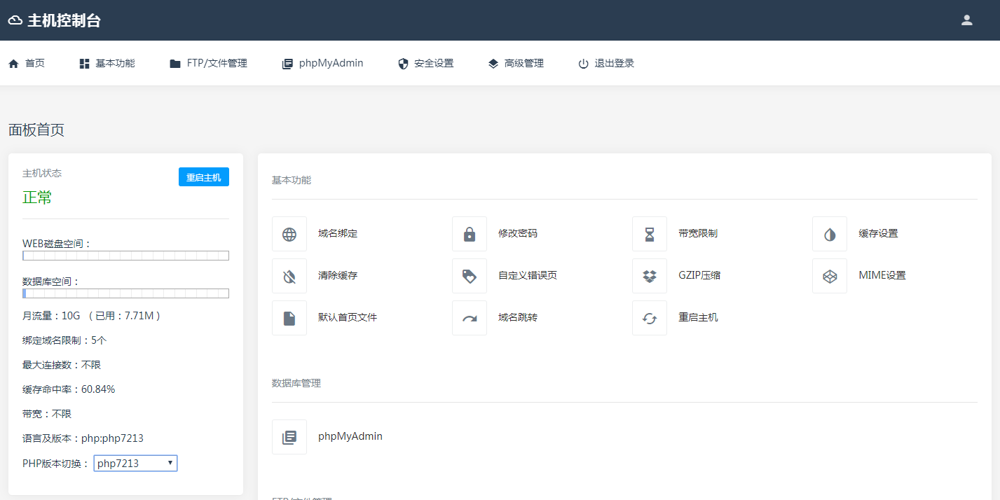

服务器
概述
- 之前在概述之中已经表述了一些服务器相关内容
- 此处服务器皆指安装了服务器软件的计算机
测试服务器
- 有时为了测试和安装软件，我们会在自己的计算机上安装服务器
- 常用的服务器软件有apache
- 推荐安装Appserv，包括Apache、Mysql、PHP，很方便
php版本
- Apache安装后PHP版本默认是5.6
- 在安装后可以切换php版本至7.0
- 可以使用PHP Version Switch进行切换（安装时会在开始菜单创建快捷方式，也可去安装目录找）
提示
- 不要更改安装目录，否则会造成数据库奇怪的问题
- 虽然安装时需要输入密码，但是实际上是没有密码的，使用数据库需要root账号登陆，然后设定密码
正式服务器
- 正式使用的虚机一般是没法定装啥系统的
- 但是一般都是用的Nginx+EasyPanel（也有简称EP的），当然那些大厂虚机另外算，当然价格也是另外算的
- 以下是常用的控制面板：EasyPanel，注：EP有多种样式，如果样式不同无需担心，基本上功能都相同
- 
一些服务器软件
- 编辑器：KodExplorer
- 数据库管理：Adminer（当然phpMyAdmin也是可以的，不过个人认为他文件多比较烦），KOD自带，反正只需要一个文件（可选的CSS文件）
记得备份
- 完成编辑或正在编辑途中，需要随手保存、记得备份，由于部分虚机的稳定性很不好，所以备份总是好习惯
- 备份包括网页文件和数据库，记得数据库也需要备份。